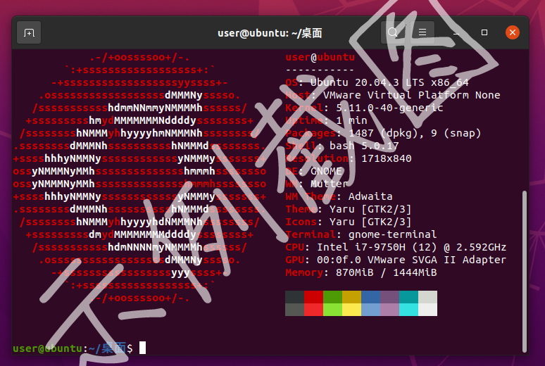
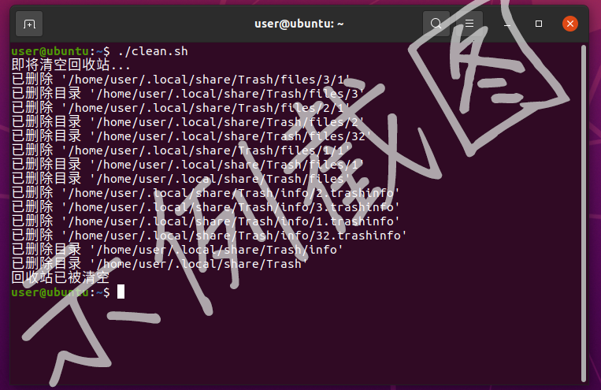
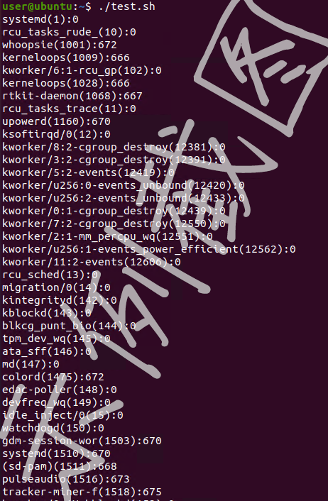

EnvSetup
# EnvSetup
软件部开发方向第二期任务
## 任务一：Linux Ready
搭建适用于开发的Linux系统环境
### 任务点
- 安装 Ubuntu Linux 虚拟机环境。
- 打开系统的终端，在其中输入`sudo apt install -y neofetch && neofetch`，然后输入密码，在命令执行完成之后截图。
### 需要上交的东西
- 上方所说的截图。
示例截图：

### 一些想说的
- 建议安装 Linux 虚拟机，而不是真正的装一个 Linux 系统（实体机）。首先是实体机折腾驱动会非常烦人，尤其是对于各种 OEM 机子（特别是笔记本）来说。其次，作为新手，搞炸东西是非常正常的事情，很显然没有人想看到自己唯一的电脑无法开机。可能会有人幻想着舒服的安装 Windows + Linux 双系统，但事实是：很有可能Windows 一个更新就让你的 Linux 系统无法启动，Linux 的一个配置错误就让你的 Windows 无法被引导。
- 如果你正在使用 MacOS ，其实应付大多数的开发环境配置并没有什么问题。但是，为了避免你把自己的主力系统环境搞炸，~~外加能顺利完成所有任务点~~，还是建议安装虚拟机。
- 虚拟机有很多不错的特性，比如说：随时可以删了重装、可以拍摄快照回退来恢复搞炸的东西、可以与 主机 共享剪贴板，甚至通过拖拽来复制文件、可以与 主机 共享一个 虚拟的子网，从而轻松实现互相通信（比如虚拟机使用主机的代理软件）。而这些特性对于新手来说都是非常友好的。
- Linux 环境建议先选择 Ubuntu。Ubuntu 是许多大型项目的官方编译环境（比如AOSP），而且对于新手比较友好。花里胡哨的各种发行版和桌面环境建议以后有时间再自己慢慢折腾。
### 指路
- 虚拟机软件，Windows 下建议使用 VMware Workstation （虽然是付费软件，但是网上激活码到处都是）。当然，你也可以选择 Oracle VM VirtualBox 和 Windows 自带的 Windows Subsystem for Linux (WSL)。忠告：VirtualBox 的稳定性不咋地，WSL 的 磁盘（IO）性能奇差。至于软件的下载和安装，上一期任务已经让你拥有了科学的上网方式，因此，无法下载/下载速度慢 都不是理由。
- 如果是 MacOS 的话，虚拟机软件可以选择 VMware Fusion。
- Ubuntu 镜像，可以去官网下载，建议使用 Ubuntu Desktop 并选择最新的 **LTS 版本**。（21.10 版本配合 VMware 之前共享剪贴板和文件拖拽不稳定，不知道现在修了没有）
- 虚拟机系统安装方式，可自行搜索，也可参考下方内容。
### 参考的虚拟机安装方式 （Windows + VMware Workstation）
- 演示的安装方式采用 VMware 自带的“简易安装”，可以省去安装过程中的大量配置过程，直接进入系统。
“简易安装”的缺点是不会自动安装中文语言包，需要进入系统后按视频中的安装一下。
如果你想要折腾完整的安装过程，自定义诸如磁盘分区之类的内容，可以自行在网上搜索其它教程。
- “简易安装信息”的“个性化 Linux”请按自己的填写，没必要照抄，系统中的用户名和密码之类的都在这里决定。
- 虚拟机的存储位置、磁盘大小等请按需选择。（磁盘没必要给太大，后期有需要可以扩容的）
- “此虚拟机的内存”请按自己的电脑配置情况设定，对于视频中的桌面版 Ubuntu 来说，1.5GB 勉强够用，建议 2GB 以上。如果有跑大型项目的需求，内存可能需要更大，比如 AOSP 可能需要 18GB+。
- 处理器数量建议拉满以使虚拟机能获得最大性能，比如我的 i7-9750H 搭载了 6 核心 12 线程，那么就在此处选择 1 处理器 12 内核。（可以在任务管理器里看自己有几核几线程）
- 进入系统后需要进行的步骤总结：
1. 切换系统下载源到国内镜像，如果你不想继续被极慢的下载速度折磨的话。
2. 安装中文语言包。
3. 在设置中切换系统语言为中文。
4. 安装系统更新。
### 评价一下某些网上的教程
如上期任务中所说，网上搜到的文章，
> 虽然有一定参考性，但是其中过时的和具有误导性的也不占少数
这在本任务中体现的尤为明显，那就顺便来聊一聊。
过时性：网上的大批教程依然在教你用 VMware 12 安装 Ubuntu 18.04，然而 2021 年 VMWare 已经 16 了，Ubuntu 更是已经更新到了 21.10，去摸这些旧版软件是一件毫无道理的事情。
绕弯子：网上的大批教程会让你在“安装客户机操作系统”时，选择“稍后安装操作系统”，而不使用 VMware 自带的“简易安装”，给出的理由是：非“最小安装”系统，会安装不必要的软件，而且下载这些软件很慢。我很怀疑这些博主到底有没有真的上手装过系统，“简易安装”默认执行的就是“最小安装”，并不会安装多余的第三方软件。而且即使是手动执行“最小安装”，也是需要从服务器下载内容的，因此上面的理由根本不成立。
莫名其妙：无论是“简易安装”，还是手动安装，只要你在安装过程中不主动点击 Skip 去跳过组件的下载，open-vm-tools （一个与虚拟机软件配合的软件包）都是会自动安装的，因此什么手动安装 open-vm-tools，手动设置分辨率都是完全没有必要的事情。
瞎扯淡：有博主将处理器设置中的“处理器数量”解释为任务管理器中的“内核数”，把“每个处理器的内核数量”解释为每个核心的线程数量。我很好奇，这些博主是在瞎猜吗？自己在虚拟机里看看自己改的设置对应到了什么很难？（事实是：“处理器数量”对应的是“插槽数” （某些服务器主板是可以安装多颗处理器的，虚拟的是这个））
装起来了：明明能“使用典型配置”却硬是要“自定义”；在那儿“自定义”却又连每个选项的功能都说不清楚，按着默认的勾选不断的点“下一步”，我寻思你一直“下一步”和直接用“典型配置”有什么区别。更有甚者，手动安装时的安装引导明明能选择简体中文，却硬是要开个英文在那儿嗯装。这种垃圾教程，不看也罢。
需要注意的是，“垃圾教程”是在未来的开发过程中非常常见的东西，而擦亮眼睛、发现不合理与错误的能力也是需要被培养的。时刻记住：文章都是人写的，人是会犯错的，更何况那些文章不少是初学者的笔记。因此，**面对网上的文章与教程，盲目相信、无脑照抄、循规蹈矩的生搬硬套并不是一个好习惯。真正的学习，应该是能够从大量的搜索资料中提取共同点，淘沙取金，把教程的“步骤”转化为自己知识体系中的“概念”，从而完成从“你得这么做”到“我该这么做”的蜕变。**
## 任务二：Terminal Ready
学习使用 Linux 命令行
任务一几乎是保姆级教程，为的是让尽可能多的人能够拥有继续向下学习的条件。
既然门已经打开，那接下来的发力就靠你自己了。
**善用搜索引擎**。
### 任务点
- 了解 Linux 终端下的 常见命令，比如 `echo` `ls` `cd` `cat` `mkdir` `touch` `chmod` `rm` `sudo` `mv` `cp` `find` `grep` `tail`。
- 了解 Linux 终端下是如何表示文件路径的（`.` `..` `~` `/`）。了解绝对路径与相对路径的区别。
- 了解 Linux 终端下的 通配符（`*` `?`） 与 管道（`|`）。
- 了解 Linux 系统中隐藏文件 / 文件夹的表示方法。
- 学习如何将终端命令封装成 bash脚本（Shell脚本） 。
- 尝试使用一下 `nano` `vim` 等终端下的文本编辑器。
- （选做）了解 Linux 终端下的命令嵌套（
`` `$()`）。
- （选做）了解 Linux 终端下的 命令返回值 与 简单条件控制（`&&` `||`）。
- （选做）了解 Linux 终端下的 输入输出流（stdin stdout stderr） 与 流重定向。
- （选做）了解 Linux 下的特殊字符设备 `/dev/null` `/dev/zero` `/dev/random`。
- （选做）**解释** 命令返回值 与 输出流 的区别。
- （选做）了解 Linux 终端下的常见条件控制语句，比如`if`和`for`。
- **解释**以下命令的含义：
```
./a
ls ../a/b
cd ~
chmod 777 /tmp/a.py
sudo rm -rf /
cat ~/*/info.txt
cat 1.txt | grep good
（选做）mkdir `find . -type d | tail -n 1`2
（选做）cat 1.txt 2>/dev/null || touch 2
```
- **写一个 bash脚本** ，实现以下所述功能：
清空**当前用户**的回收站，并打印删除了哪些东西。
已知回收站文件的保存路径为：用户home下的`.local/share/Trash`。
效果展示：

- （选做）**写一个 bash脚本** ，实现以下所述功能：
打印当前系统中所有任务的 PID（process ID）、任务名 与 `oom_score`。
打印格式为：`任务名(PID):oom_score`
已知，系统中的所有任务都在`/proc`目录下以 **用数字命名的文件夹** 表示，而这个数字就是 PID。
已知，`oom_score`位于`/proc/
/oom_score`，
任务名 位于`/proc//comm`。
比如，pid为 23333 的进程，其任务名位于`/proc/23333/comm`，`oom_score`位于`/proc/23333/oom_score`。
效果展示：

### 需要上交的东西
- 一个 markdown 文档，包含任务点中需要“解释”的东西。
- 任务点中所述的 “bash脚本”。
### 太难了，为什么要学这些东西？
确实，不简单。明明我们有图形界面，可为什么还是要学在终端里敲代码呢？那是因为，对于 Linux 来说，终端才是本体，图形界面永远只是辅助。大量的软件包和可执行文件都只能在终端中操作和执行，而当 Linux 系统被部署为服务器环境时，更是一般不会安装消耗资源极大的图形界面，一切操作都靠终端命令完成。而无论是服务器环境，还是一些依赖于终端操作的软件包，都是以后几乎必然会接触到的东西，终端的基本操作不应该成为你继续前进的绊脚石。
那么问题来了，命令和语法记不住怎么办？没人让你记住它们，你所需要的只是：**了解这个东西的存在，让大脑知道这个东西大概可以用来干嘛，在遇到相关需求的时候能够快速匹配到这个命令/语法上，然后再通过搜索引擎/软件包的`--help`回顾用法，进而快速解决问题。**
## 任务的上交方式
和上期任务一样，通过向[这个仓库](https://github.com/hdu-asta/AssignmentsSubmitting)发起 Pull request 的方式进行。唯一的区别是：这次请把你的学号文件夹放在`assignment2`文件夹中。
参考目录结构如下（文件名无所谓）
```
.
└── assignment2
├── 22066132
│ ├── neofetch.png
│ ├── 解释.md
│ ├── cleanTrash.sh
│ └── oomScore.sh
└── placeholder
```